STORY
今日は、魔法学校の進級試験
見習い魔女のルピナ。試験の中身は……先生がしかけた、魔法の塔の部屋からの脱出!
おかしの教室、衣装の部屋、星見の部屋。部屋に置かれた本や資料を読みながら、ひとつずつ扉を開けていきます。
絵は明るくかわいく。こわい場面や、急におどろかせる演出はありません。
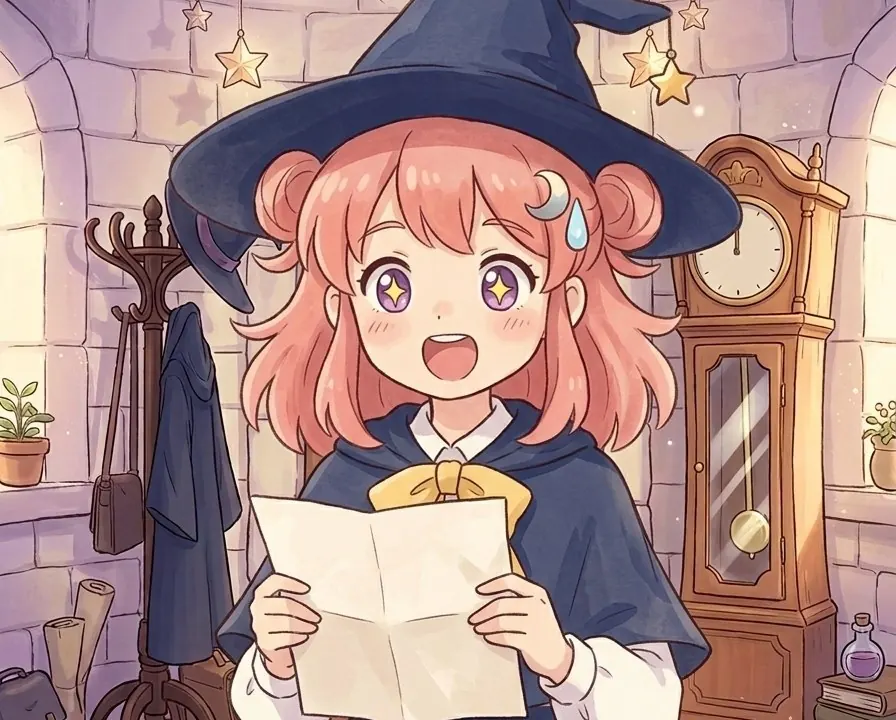
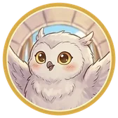
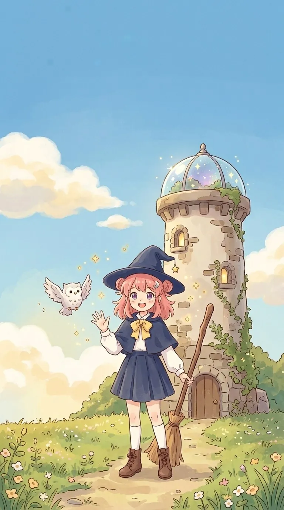
無料の脱出ゲーム
見習い魔女ルピナの進級試験は、先生がしかけた魔法の塔からの脱出。ふくろうのネムといっしょに、3つの部屋の謎を解いて合格をめざそう。
10月30日 配信 iPhone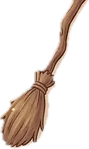
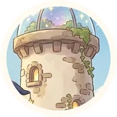
STORY
見習い魔女のルピナ。試験の中身は……先生がしかけた、魔法の塔の部屋からの脱出!
おかしの教室、衣装の部屋、星見の部屋。部屋に置かれた本や資料を読みながら、ひとつずつ扉を開けていきます。
絵は明るくかわいく。こわい場面や、急におどろかせる演出はありません。

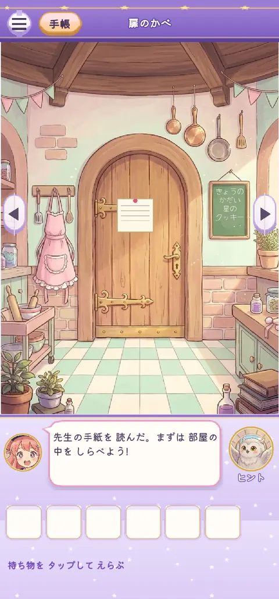
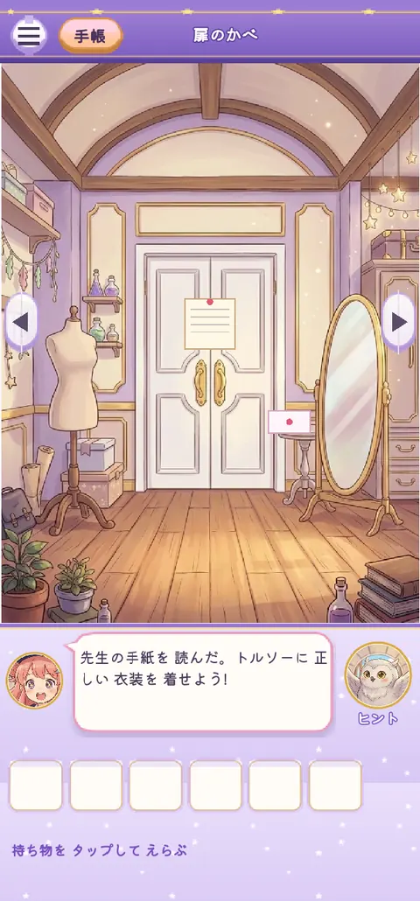
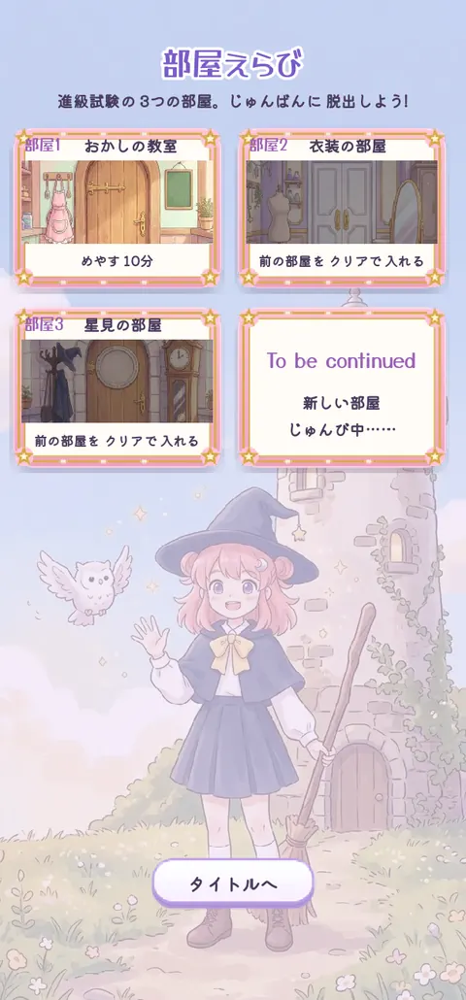
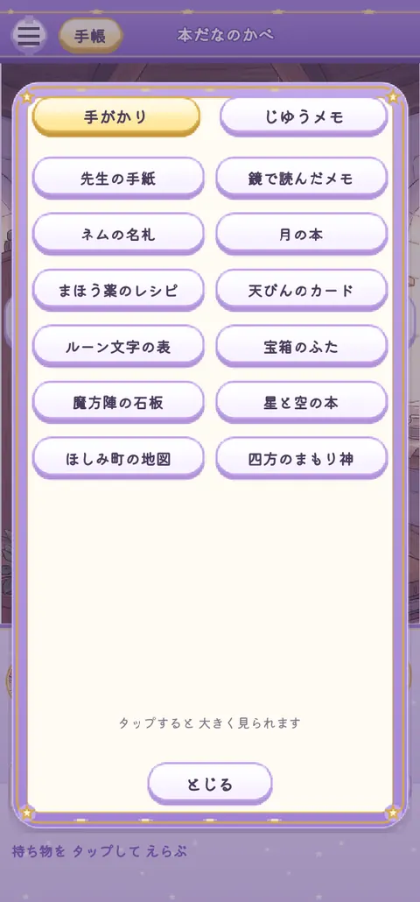
POINT
月の満ち欠け、北極星、ルーン文字。塔の部屋にある本や資料が、謎を解く手がかりです。
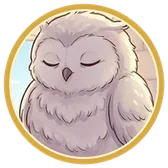
HOW TO PLAY
はじめての脱出ゲームでも、すぐに遊べます。
HINT & PRICE
遊ぶ前に知っておきたいことを、正直に書いておきます。
Q&A
ほかに困ったことはサポートへどうぞ。
はい、無料です。アプリ内課金はありません。部屋をクリアしたあとの全画面広告と、ヒントを見るときの動画広告があります。
部屋は3つです。部屋えらびの画面に出る「めやす」の時間は、おかしの教室が10分、衣装の部屋が15分、星見の部屋が25分です。進み具合は自動でセーブされるので、1部屋ずつ遊んでも大丈夫です。
部屋ごとに少しずつむずかしくなります。月や星などの知識を使う謎もありますが、部屋の中の本や資料が手がかりになります。困ったときはヒントがあります。
右下のふくろう(ネム)から、3段階のヒントを見られます。3つめは答えなので、先へ進めなくなることはありません。動画は最後まで見て閉じると、ヒントが1つ出ます。電波の弱いところでは、動画を読みこめないことがあります。
ありません。明るくかわいい絵で、急におどろかせる場面もありません。
上の「手帳」に、見た手がかりが自動でのこっています。気づいたことは「じゆうメモ」に書いておけます。
いまは3部屋です。部屋えらびの画面に「じゅんび中」の場所がありますが、増える日はまだ決まっていません。
ゲームのデータは端末の中にだけ保存されるため、引き継ぎはできません。アプリを削除すると、データも消えます。
「ことのと おでかけ大作戦」とは、主人公もお話も別々です。どちらから遊んでも大丈夫です。
いまは iPhone 版だけです(iOS 15 以上)。
SERIES
脱出ゲームは、1作ごとに主人公もお話も別々です。どこからでもどうぞ。
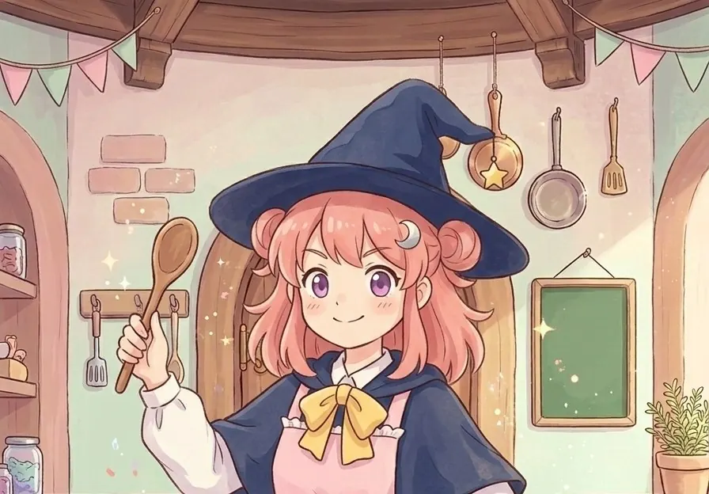
ルピナとネムといっしょに、進級試験に挑戦してみてください。
10月30日 配信 iPhone